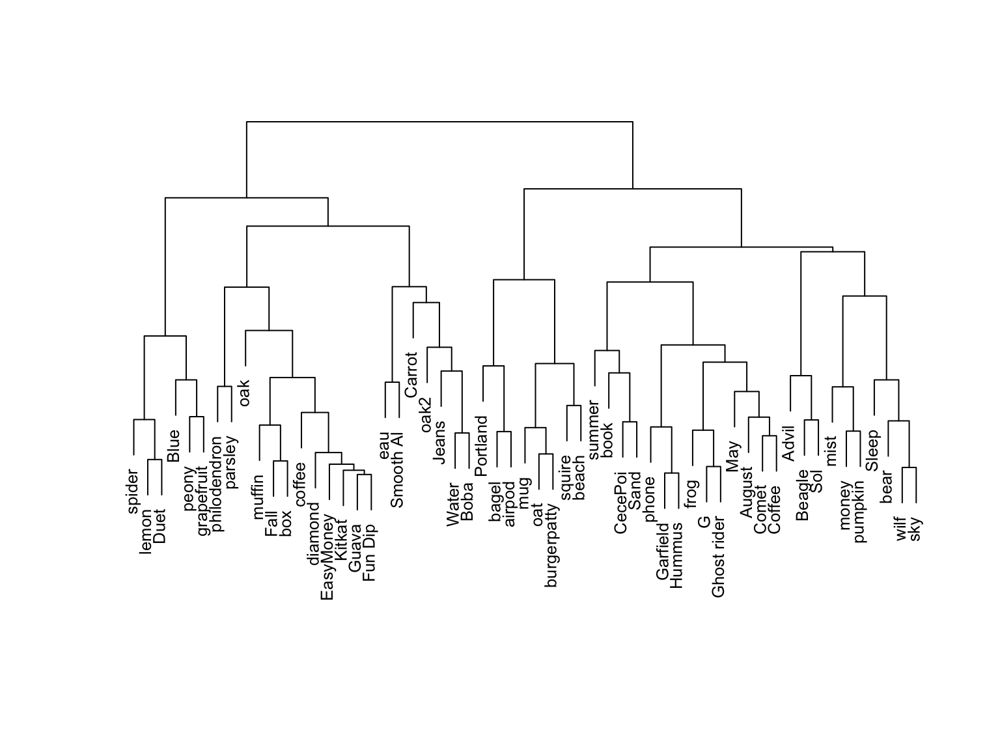
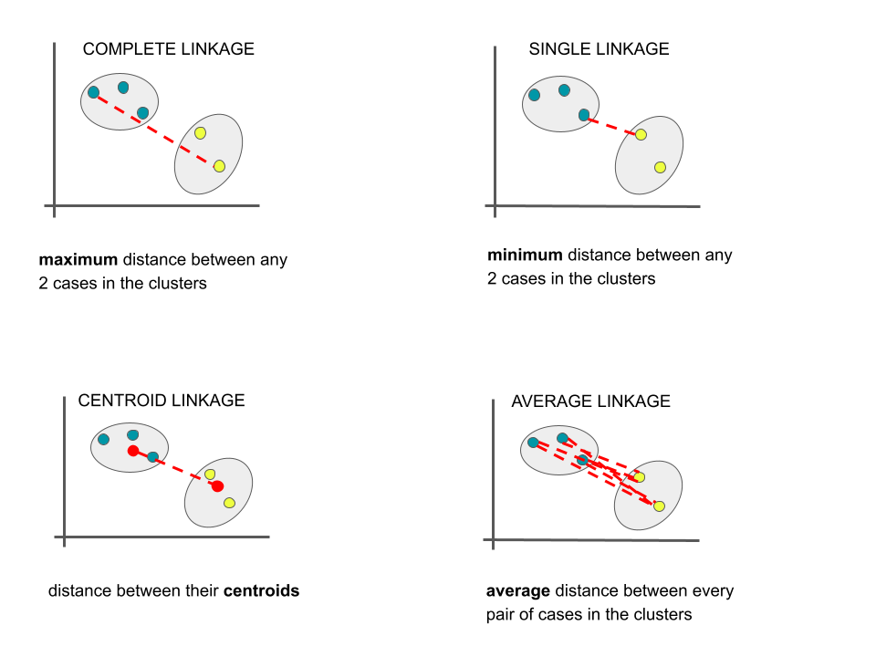
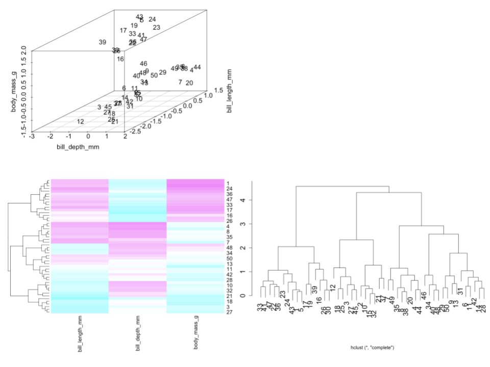

Focus: Structure among the columns, i.e. features x.
Goal: Combine groups of correlated features x into a smaller set of uncorrelated features which preserve the majority of information in the data. (We’ll discuss the motivation later!)
Methods: Principal components
Examples
Remember this from the first day of class?

For more examples, check out the Unit 5 Motivating Question page here.
Notes: Hierarchical Cluster Analysis
Let’s recap the main ideas from the videos you watched before class today.
Goal
Create a hierarchy of clusters where clusters consist of similar data points.
Algorithm
Suppose we have a set of p feature variables (\(x_1, x_2,..., x_p\)) on each of n data points. Each data point starts as a leaf.
Compute the Euclidean distance between all pairs of data points with respect to x.
Fuse the 2 closest data points into a single cluster or branch.
Continue to fuse the 2 closest clusters until all cases are in 1 cluster.
NOTE: This is referred to as an “agglomerative” algorithm.
Dendrograms
The hierarchical clustering algorithm produces a dendrogram (of or relating to trees). To use a dendrogram:
Start with the leaves at the bottom (unlike classification trees!). Each leaf represents a single case / row in our dataset.
Moving up the tree, fuse similar leaves into branches, fuse similar branches into bigger branches, fuse all branches into one big trunk (all cases).
The more similar two cases, the sooner their branches will fuse. The height of the first fusion between two cases’ branches measures the “distance” between them.
The horizontal distance between 2 leaves does not reflect distance!
Measuring Distance
There are several linkages we can use to measure distance between 2 clusters / branches. Unless specified otherwise, we’ll use the complete linkage method.

Small Group Discussion
Open the QMD for today and work through Examples 1–5 with your table.
EXAMPLE 1: Standardizing the features
Let’s start by using hierarchical clustering to identify similar groups (and possible species!) of penguins with respect to their bill lengths (mm), bill depths (mm), and body masses (g).
This algorithm relies on calculating the distances between each pair of penguins.
Why is it important to first standardize our 3 features to the same scale (centered around a mean of 0 with standard deviation 1)?
# A tibble: 6 × 3
bill_length_mm bill_depth_mm body_mass_g
<dbl> <dbl> <int>
1 39.1 18.7 3750
2 39.5 17.4 3800
3 40.3 18 3250
4 NA NA NA
5 36.7 19.3 3450
6 39.3 20.6 3650
Solution:
The features are on different scales. It’s important to standardize so that one feature doesn’t have more influence over the distance measure, simply due to its scale.
EXAMPLE 2: Interpreting a dendrogram
Check out the standardized data, heat map, and dendrogram for a sample of just 50 penguins.

Is penguin 30 more similar to penguin 33 or 12?
Identify and interpret the distance, calculated using the complete linkage, between penguins 30 and 33.
Consider the far left penguin cluster on the dendrogram, starting with penguin 33 and ending with penguin 30. Use the heat map to describe what these penguins have in common.
Solution:
33 – 30 and 33 cluster together sooner than 30 and 12
This clustering was done using the complete linkage method. Thus at most, the standardized difference in the bill length, bill depth, and body mass of penguins 30 and 33 is 2.
That group generally has large bill length and body mass but small bill depth.
EXAMPLE 3: By Hand
To really get the details, you’ll perform hierarchical clustering by hand for a small example.
The closest pair are 4 and 5 with a distance of 0.54
1
2
3
4
5
1
0
2
0.94
0
3
2.19
2.60
0
4
2.25
2.26
1.00
0
5
2.64
2.77
0.85
0.54
0
Step 2
The distance matrix below gives the current distance between clusters 1, 2, 3, and (4 & 5) using complete linkage (the distance between 2 clusters is the maximum distance btwn any pair of penguins in the 2 clusters). By this, clusters or penguins 1 & 2 are the closest, with a distance of 0.94:
1
2
3
4 & 5
1
0
2
0.94
0
3
2.19
2.60
0
4 & 5
2.64
2.77
1.00
0
Step 3
The distance matrix below gives the current distance between clusters (1 & 2), 3, and (4 & 5) using complete linkage. By this, clusters 3 and (4 & 5) are the closest, with a distance of 1:
1 & 2
3
4 & 5
1 & 2
0
3
2.60
0
4 & 5
2.77
1.00
0
Step 4
The distance matrix below gives the current distance between our 2 clusters, (1 & 2) and (3 & 4 & 5) using complete linkage. The distance between them is 2.77 (hence the height of the final merge in our dendrogram):
The closest pair are 4 and 5 with a distance of 0.54
1
2
3
4
5
1
0
2
0.94
0
3
2.19
2.60
0
4
2.25
2.26
1.00
0
5
2.64
2.77
0.85
0.54
0
Step 2
The distance matrix below gives the current distance between clusters 1, 2, 3, and (4 & 5) using single linkage (the distance between 2 clusters is the maximum distance btwn any pair of penguins in the 2 clusters). By this, penguin 3 is closest to the cluster of penguins 4 & 5, with a distance of 0.85:
1
2
3
4 & 5
1
0
2
0.94
0
3
2.19
2.60
0
4 & 5
2.25
2.26
0.85
0
Step 3
The distance matrix below gives the current distance between clusters 1, 2, and (3, 4, 5) using single linkage. By this, clusters 1 and 2 are the closest, with a distance of 0.94:
1
2
3,4,5
1
0
2
0.94
0
3,4,5
2.19
2.26
0
Step 4
The distance matrix below gives the current distance between our 2 clusters, (1 & 2) and (3 & 4 & 5) using single linkage. The distance between them is 2.19 (hence the height of the final merge in our dendrogram):
1 & 2
3,4,5
1 & 2
0
3,4,5
2.19
0
EXAMPLE 4: Explore Clusters
Now, let’s go back to a sample of 50 penguins.
Run the 2 chunks below to build a shiny app that we’ll use to build some intuition for hierarchical clustering.
Put the slider at 9 clusters. These 9 clusters are represented in the dendrogram and scatterplot of the data. Do you think that 9 clusters is too many, too few, or just right?
Now set the slider to 5. Simply take note of how the clusters appear in the data.
Now sloooooowly set the slider to 4, then 3, then 2. Each time, notice what happens to the clusters in the data plot. Describe what you observe.
What are your thoughts about the 2-cluster solution? What happened?!
Code
# Load the datalibrary(tidyverse)set.seed(253)more_penguins <- penguins %>%sample_n(50) %>%select(bill_length_mm, bill_depth_mm) %>%na.omit()# Run hierarchical clusteringpenguin_cluster <-hclust(dist(scale(more_penguins)), method ="complete")# Record cluster assignmentsclusters <- more_penguins %>%mutate(k =rep(1, nrow(more_penguins)), cluster =rep(1, nrow(more_penguins)))for(i in2:12){ clusters <- more_penguins %>%mutate(k =rep(i, nrow(more_penguins)), cluster =cutree(penguin_cluster, k = i)) %>%bind_rows(clusters)}
Code
library(shiny)library(factoextra)library(RColorBrewer)# Build the shiny serverserver_hc <-function(input, output) { dend_plot <-reactive({ cols =brewer.pal(n= input$k_pick, "Set1")fviz_dend(penguin_cluster, k = input$k_pick, k_colors = cols)}) output$model_plot <-renderPlot({ cols =brewer.pal(n= input$k_pick, "Set1") dend <-attributes(dend_plot())$dendrogram tree_order <-order.dendrogram(dend) clusters_k <- clusters %>%filter(k == input$k_pick) clusters_k <- clusters_k %>%mutate(cluster =factor(cluster, levels =unique(clusters_k$cluster[tree_order])))names(cols) =unique(clusters_k$cluster[tree_order]) clusters_k %>%ggplot(aes(x = bill_length_mm, y = bill_depth_mm, color =factor(cluster))) +geom_point(size =3) +scale_color_manual(values = cols) +theme_minimal() +theme(legend.position ="none") }) output$dendrogram <-renderPlot({dend_plot() })}# Build the shiny user interfaceui_hc <-fluidPage(sidebarLayout(sidebarPanel(h4("Pick the number of clusters:"), sliderInput("k_pick", "cluster number", min =1, max =9, value =9, step =1, round =TRUE) ),mainPanel(plotOutput("dendrogram"),plotOutput("model_plot") ) ))# Run the shiny app!shinyApp(ui = ui_hc, server = server_hc)
Solution:
too many. they’re very specific
….
the clusters continue to merge as we go up the dendrogram. (eg: the 5-cluster solution is nested in the 4-cluster solution)
yikes! this solution doesn’t capture the more natural looking clusters in the data. this algorithm is greedy – it makes the best decisions at each step, but the results aren’t necessarily globally optimal.
EXAMPLE 5: Details
Is hierarchical clustering greedy?
We learned in the video that, though they both produce tree-like output, the hierarchical clustering and classification tree algorithms are not the same thing! Similarly, though they both calculate distances between each pair of data points, the hierarchical clustering and KNN algorithms are not the same thing! Explain.
[This is a statement, not a question :).] When all features x are quantitative or logical (TRUE/FALSE), we measure the similarity of 2 data points with respect to the Euclidean distance between their standardized x values. But if at least 1 feature x is a factor / categorical variable, we measure the similarity of 2 data points with respect to their Gower distance. The idea is similar to what we did in KNN (converting categorical x variables to dummies, and then standardizing), but the details are different. If you’re interested:
library(cluster)?daisy
Solution:
Yes. See example 4.
We don’t want different x scales to impact our calculations of distance, hence our sense of what data points are closest to each other.
Exercises
For the rest of class, work together on the exercises below. If you complete these, go back to the activity from our last class and follow the prompts there to review for Quiz 2.
NOTE: these exercises will be on HW6.
Exercise 1: Visualizing structure
Our first goal will be to understand the similarities among different candies (i.e. the rows of our candy_rankings dataset) with respect to their ingredients, popularity, and other properties.
# Load some packages & datalibrary(tidyverse)library(fivethirtyeight)data("candy_rankings")
One variable in the dataset merely identifies or labels the candies, hence is not a candy feature. Convert this to a row name, instead of a column.
Construct a heat map of your (standardized) candy features, setting Colv = NA.
Construct a dendrogram of your (standardized) candy features using the complete linkage method. NOTE: Since all features are quantitative or logical here, do not use the daisy() code.
How many natural clusters do there appear to be among the candies? There are multiple reasonable answers, and you can give more than 1.
To what other candy are Nik L Nips most similar?
Exercise 2: Defining & making meaning from clusters
For the purposes of consistency from student to student, let’s explore the possibility of there being 4 candy clusters.
Re-plot your dendrogram, coloring the different leaves and branches according to their cluster assignment. NOTE: There’s built-in code to do this!
To get a sense for what makes the candies in each cluster “similar”, calculate the mean of each feature within each cluster. NOTES:
HINT: First add a column to your dataset which indicates the cluster assignment for each candy. Then group_by() and summarize_all() (which is like summarize() but performs a calculation on all columns).
For TRUE/FALSE features, the mean indicates the proportion of candies that are TRUE.
The cluster labels (1, 2, 3, 4) are not necessarily in the same order of the clusters in the dendrogram!
LOOKING AHEAD: In a future activity, you’ll be asked to identify appropriate cluster labels and to describe each cluster. Do not write about that yet (your thoughts will evolve throughout the analysis), but start keeping it in mind!
OPTIONAL: There’s no “right” number of clusters here! Repeat parts a and b using 3 clusters. How, if at all, does this change your candy insights?
Exercise 3: Sensitivity analysis
Our hierarchical cluster analysis above utilized complete linkage. That is, we measured the distance between two clusters by the maximum distance between any pair of candies in those clusters. This is merely one strategy. To determine how sensitive the clustering algorithm is to our choice of linkage, let’s consider 2 other strategies.
Construct a dendrogram using the centroid linkage approach (don’t try coloring clusters). Describe how the pattern differs from that of our original complete linkage dendrogram and explain why centroid linkage will often produce dendrograms that look like this.
Construct a dendrogram using the single linkage approach, colored by 4 clusters. Describe how the pattern differs from that of our original complete linkage dendrogram and explain why single linkage will often produce dendrograms that look like this. NOTE: Be sure to not use your cluster assignments from the previous exercise as features in this exercise!
The appropriate linkage choice depends upon our clustering goals. Suppose we want to identify 4 candy clusters, and want the candies in each cluster to be quite similar. What linkage better suits this goal: complete or single? Explain.
Suppose we were to cluster Mac students based on their interest in a variety of activities (eg: data, basketball, piano, cooking, etc), and then threw a party for each cluster. If you were to attend such a party, how would you prefer the clustering be done, using complete or single linkage? Justify your choice. NOTE: There is no wrong answer, but there is wrong justification.
Wrapping Up
As usual, take time after class to finish any remaining exercises, check solutions, reflect on key concepts from today, and come to office hours with questions
Upcoming due dates:
HW5: due yesterday (Nov 13); tomorrow is last day of extension window
HW4 Revisions: due tomorrow (Nov 15)
Quiz 2: next class (Nov 19)
CP13: next week (Nov 21)
Group Assignment 2: before Thanksgiving (Nov 26)
HW6: after Thanksgiving (Dec 4)
Notes: R code
The tidymodels package is built for models of some outcome variable y. We can’t use it for clustering.
Instead, we’ll use a variety of new packages that use specialized, but short, syntax. Suppose we have a set of sample_data with multiple feature columns x, and (possibly) a column named id which labels each data point.
# Install packageslibrary(tidyverse)library(cluster) # to build the hierarchical clustering algorithmlibrary(factoextra) # to draw the dendrograms
PROCESS THE DATA
If there’s a column that’s an identifying variable or label, not a feature of the data points, convert it to a row name.
# Scenario 1: ALL features x are quantitative OR logical (TRUE/FALSE)# Use either a "complete", "single", "average", or "centroid" linkage_methodhier_model <-hclust(dist(scale(sample_data)), method = ___)# Scenario 2: AT LEAST 1 feature x is a FACTOR (categorical)# Use either a "complete", "single", "average", or "centroid" linkagehier_model <-hclust(daisy(sample_data, metric ="gower"), method = ___)
VISUALIZING THE CLUSTERING: HEAT MAPS AND DENDRODGRAMS
NOTE: Heat maps can be goofy if at least 1 x feature is categorical
# Heat maps: ordered by the id variable (not clustering)heatmap(scale(data.matrix(sample_data)), Colv =NA, Rowv =NA)# Heat maps: ordered by dendrogram / clusteringheatmap(scale(data.matrix(sample_data)), Colv =NA)# Dendrogram (change font size w/ cex)fviz_dend(hier_model, cex =1)fviz_dend(hier_model, horiz =TRUE, cex =1) # Plot the dendrogram horizontally to read longer labels
DEFINING & PLOTTING CLUSTER ASSIGNMENTS
# Assign each sample case to a cluster# You specify the number of clusters, k# We typically want to store this in a new dataset so that the cluster assignments aren't # accidentally used as features in a later analysis!cluster_data <- sample_data %>%mutate(hier_cluster_k =as.factor(cutree(hier_model, k = ___)))# Visualize the clusters on the dendrogram (change font size w/ cex)fviz_dend(hier_model, k = ___, cex =1)fviz_dend(hier_model, k = ___, horiz =TRUE, cex =1) # Plot the dendrogram horizontally to read longer labels